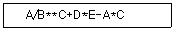
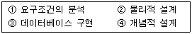
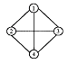
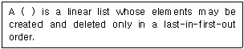
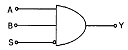
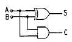
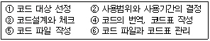
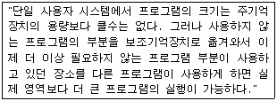
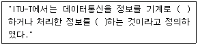

정보처리산업기사 (2004-05-23 기출문제)
1과목: 데이터 베이스
1. 다음 산술문의 중위 표기(Infix)에서 후위 표기(Postfix)로 옳게 변환된 것은?

- ABC**/DE+*AC-*
- ABC**/DE*+AC*-
- **/ABC*+DE*-AC
- **/ABC+*DE-*AC
(정답률: 63%)

2. SQL 뷰(View)의 생성을 위한 정의 예약어는?
- CREATE
- ALTER
- UPDATE
- DROP
(정답률: 89%)
3. 개체-관계(Entity-Relational) 모델에 대한 설명으로 옳지 않은 것은?
- 1976년 P.Chen에 의해 처음으로 제안되었다.
- E-R 모델이 널리 사용되는 이유 중의 하나는 데이터베이스 응용 스키마 정의를 나타내는 것과 관련된 다이어그램 기법이기 때문이다.
- 개체 타입(Entity Type)과 이들간의 관계 타입(Relationship Type)을 이용해서 현실 세계를 개념적으로 표현한다.
- E-R Diagram에 사용되는 요소들은 개체 집합을 나타내는 사각형, 관계 집합을 나타내는 이중 화살표 등으로 구성된다.
(정답률: 79%)
4. 삽입(embedded) SQL을 포함하는 응용 프로그램의 특성이 아닌 것은?
- 삽입 SQL문은 PASCAL, COBOL, C와 같은 호스트 프로그래밍 언어로 작성된 응용 프로그램 속에 내장시켜 사용할 수 있다.
- 삽입 SQL 실행문은 호스트 언어의 실행문이 나타날 수 있는 곳이면 어디든지 나타날 수 있다.
- 호스트 변수와 데이터베이스 필드의 이름이 중복 사용될 수 없다.
- 삽입 SQL문은 호스트 변수를 포함할 수 있다.
(정답률: 54%)
5. 데이터베이스 관리자(DBA)의 역할로 거리가 먼 것은?
- 데이터베이스 개념 스키마 정의
- 내부 스키마 정의
- 데이터베이스 시스템의 설계 및 조작
- 응용 프로그램의 작성
(정답률: 81%)
6. 다음의 자료 구조 중 성질이 다른 하나는?
- 스택(stack)
- 트리(tree)
- 큐(queue)
- 데크(deque)
(정답률: 85%)
7. 데이터베이스의 정의로 보기 어려운 것은?
- 동일한 데이터의 중복을 최소화한다.
- 컴퓨터가 접근할 수 있는 저장매체에 저장된 데이터의 집합이다.
- 특정 프로그램을 위한 독자적인 데이터이다.
- 존재 목적이나 유용성 면에서 필수적인 데이터이다.
(정답률: 79%)
8. 다음 데이터베이스 설계 순서를 바르게 나열한 것은?

- ①-②-③-④
- ①-③-②-④
- ①-④-②-③
- ①-②-④-③
(정답률: 85%)
9. 스택(STACK)의 응용 분야가 아닌 것은?
- 함수호출
- 순환호출
- 작업 스케줄링
- 수식계산
(정답률: 71%)
10. 해싱 함수의 값을 구한 결과 키 K1, K2가 같은 값을 가질 때, 이들 키 K1, K2의 집합을 무엇이라 하는가?
- Mapping
- Folding
- Synonym
- Chaining
(정답률: 73%)
11. 해시(hash) 함수와 밀접한 관계가 있는 파일은?
- ISAM 파일
- VSAM 파일
- DAM 파일
- 링 파일
(정답률: 53%)
12. 기관이 필요로 하는 정보를 생성하기 위한 모든 데이터 객체들에 대한 정의뿐만 아니라 데이터베이스 접근권한, 보안정책, 무결성 규칙에 관한 명세를 기술한 것은?
- 외부 스키마
- 개념 스키마
- 내부 스키마
- 서브 스키마
(정답률: 77%)
13. DBMS의 필수 기능에 해당하지 않는 것은?
- 정의기능(definition facility)
- 조작기능(manipulation facility)
- 제어기능(control facility)
- 회복기능(recovery facility)
(정답률: 86%)
14. 트랜잭션(transaction)의 특성에 해당하지 않는 것은?
- 원자성(Atomicity)
- 일관성(Consistency)
- 지속성(Duration)
- 무결성(Integrity)
(정답률: 50%)
15. 관계 데이터 모형에서 하나의 릴레이션을 구성하는 각각의 행을 지칭하는 것은?
- DOMAIN
- TUPLE
- ENTITY
- MEMBER
(정답률: 74%)
16. 다음과 같은 그래프에서 간선의 개수는?

- 2개
- 4개
- 6개
- 8개
(정답률: 81%)
17. What is the domain?
- a set of atomic values
- a set of table values
- a set of composite values
- a set of relation values
(정답률: 42%)
18. 관계 모델에서의 무결성을 제약하는 방법으로, 기본 키의 값은 널(null)일 수 없다는 무결성 조건은?
- 개체 무결성
- 참조 무결성
- 도메인 제약 조건
- 함수적 종속
(정답률: 75%)
19. 다음 ( ) 안의 내용에 해당하는 관련 단어는?

- Stack
- Queue
- List
- Tree
(정답률: 79%)
20. 관계형 데이터베이스에서 릴레이션의 특성으로 거리가 먼 것은?
- 하나의 릴레이션에서 튜플의 순서는 없다.
- 각 속성은 릴레이션 내에서 유일한 이름을 가진다.
- 모든 튜플은 서로 다른 값을 갖는다.
- 한 릴레이션에 나타난 속성 값은 논리적으로 분해 가능한 값이어야 한다.
(정답률: 69%)
2과목: 전자 계산기 구조
21. Gray code 011011을 binary number로 변환시키면?
- (110010)2
- (010110)2
- (010010)2
- (111000)2
(정답률: 47%)
22. 입력 번지 선이 8개, 출력 데이터 선이 8개인 ROM의 기억 용량은?
- 64 바이트
- 256 바이트
- 512 바이트
- 1024 바이트
(정답률: 53%)
23. 다음 게이트의 출력은?(단, A=B=S=1)

- 0
- 1
- AB
- S
(정답률: 63%)
24. 인스트럭션(instruction) 사이클에 해당되지 않는 것은?
- FETCH cycle
- INDIRECT cycle
- DECODE cycle
- EXECUTE cycle
(정답률: 67%)
25. 주기억 장치에 기억된 명령을 꺼내서 해독하고, 시스템 전체에 지시 신호를 내는 것은?
- 채널(Channel)
- 제어 기구(control unit)
- 연산 논리 기구(ALU)
- 입ㆍ출력 장치(I/O unit)
(정답률: 57%)
26. 그림과 같은 논리회로를 설명한 내용 중 옳지 않은 것은?

- 반가산기를 나타내는 논리회로이다.
- S=AB+A‘+B’이다.
- C=AB이다.
- S=A XOR B로 표시할 수 있다.
(정답률: 57%)
27. 연산한 결과를 기억장치로 보내기 전에 잠시 보관하는 레지스터는?
- Adder
- Accumulator
- Index Register
- Core Memory
(정답률: 62%)
28. 인터럽트의 발생 원인이나 종류를 소프트웨어로 판단하는 방법은?
- Polling
- Daisy chain
- Decoder
- Multiplex
(정답률: 67%)
29. 컴퓨터의 내부 상태를 나타내는 레지스터(register)는?
- 버퍼 레지스터(buffer register)
- 스테이터스 레지스터(status register)
- 인덱스 레지스터(index register)
- 명령 레지스터(instruction register)
(정답률: 47%)
30. 프로그램 실행 도중 분기가 발생하면 CPU 내의 어떤 장치의 내용을 먼저 변화시켜야 하는가?
- MAR(Memory Address Register)
- PC(Program Counter)
- MBR(Memory Buffer Register)
- IR(Instruction Register)
(정답률: 52%)
31. 한 명령을 두 부분으로 나누면?
- 호출과 실행
- 연산과 논리
- 번지와 데이터
- operation과 operand
(정답률: 46%)
32. Error를 검출하여 교정까지 할 수 있는 Code는?
- Gray Code
- Excess-3 Code
- EBCDIC Code
- Hamming Code
(정답률: 77%)
33. 2진법의 수 1101.11을 10진법으로 표시하면?
- 11.75(10)
- 13.55(10)
- 13.75(10)
- 15.3(10)
(정답률: 74%)
34. 컴퓨터 내부에서 음수를 표현하는 방법에 속하지 않는 것은?
- 부호∼크기(절대치) 표현법
- 크기∼부호∼크기 표현법
- 부호∼1의 보수 표현법
- 부호∼2의 보수 표현법
(정답률: 64%)
35. 중앙처리장치에서 사용되는 레지스터(register)의 종류가 아닌 것은?
- Accumulator
- Program Counter
- Instruction Register
- Full Adder
(정답률: 72%)
36. 레지스터의 내용을 메모리에 전달하는 기능을 무엇이라 하는가?
- Fetch
- Store
- Load
- Transfer
(정답률: 35%)
37. 인터럽트 발생시 복귀 주소를 기억시키는데 사용되는 것은?
- 큐
- 스택
- 어큐뮬레이터
- 프로그램 카운터
(정답률: 55%)
38. 주소 부분이 하나밖에 없는 1-주소 명령 형식에서 결과 자료를 넣어 두는데 사용하는 레지스터는?
- 어큐뮬레이터(accumulator)
- 인덱스(index) 레지스터
- 범용 레지스터
- 스택(stack)
(정답률: 44%)
39. 연산 수행시 스택(stack)을 이용하는 인스트럭션 형식은?
- 0-주소 인스트럭션 형식
- 1-주소 인스트럭션 형식
- 2-주소 인스트럭션 형식
- 3-주소 인스트럭션 형식
(정답률: 67%)
40. 컴퓨터의 입ㆍ출력에 필요한 기능이 아닌 것은?
- 입ㆍ출력 버스
- 입ㆍ출력 인터페이스
- 입ㆍ출력 제어
- 입ㆍ출력 기억
(정답률: 61%)
3과목: 시스템분석설계
41. 처리될 파일의 정보가 기록순서나 코드순서와 같은 논리적 순서와 관계 없이 특정한 방법으로 키 변환을 하여 임의로 자료를 보관하고 처리시에도 필요한 장소에 직접 접근 하도록 만든 파일은?
- 랜덤파일
- 순차파일
- 순서파일
- 색인순차파일
(정답률: 55%)
42. 시스템 분석자와 설계자가 갖추어야 할 조건에 대한 설명으로 옳지 않은 것은?
- 기업의 목적을 정확히 이해해야 한다.
- 업계의 동향 및 관계 법규 등도 파악해야 한다.
- 컴퓨터 기술과 관리 기법을 알아야 한다
- 현장 분석 경험은 중요하지 않다.
(정답률: 82%)
43. 시스템 개발 초기에 사용자의 요구 기능을 시제품으로 만들어 사용자로 하여금 기능과 사용성 등에 대해 검증시켜 가면서 시스템을 개발하는 기법은?
- 프로토타입 모델(Prototype model)
- 나선형 모델(Spiral model)
- 폭포수 모델(Waterfall model)
- 구조적 모델(Structured model)
(정답률: 61%)
44. 데이터의 공통된 성질을 추출하여 슈퍼 클래스를 선정하는 개념에 해당되는 것은?
- 객체
- 추상화
- 다형성
- 상속성
(정답률: 41%)
45. 모듈의 결합도는 설계에 대한 품질 평가 방법의 하나로서 두 모듈 간의 상호 의존도를 측정하는 것이다. 다음 중 설계 품질이 가장 좋은 결합도는?
- 공통 결합
- 자료 결합
- 제어 결합
- 외부 결합
(정답률: 48%)
46. 하나의 마스터 파일을 목적에 따라 여러 종류의 파일로 나누어 두는 것이 바람직한 경우가 많이 있는데, 이러한 경우에 마스터 파일의 끝부분에 해당하는 파일은 무엇인가?
- 트랜잭션 파일(transaction file)
- 히스토리 파일(history file)
- 원시자료 파일(source data file)
- 트레일러 파일(trailer file)
(정답률: 47%)
47. 코드의 기능으로 거리가 먼 것은?
- 식별기능
- 검색기능
- 분류기능
- 배열기능
(정답률: 50%)
48. 코드 설계 순서로 옳은 것은?

- ① - ② - ③ - ④ - ⑤ - ⑥
- ⑥ - ⑤ - ④ - ③ - ② - ①
- ② - ① - ④ - ③ - ⑥ - ⑤
- ① - ② - ④ - ③ - ⑥ - ⑤
(정답률: 70%)
49. 시스템의 기본 요소와 관련 없는 것은?
- 입력
- 출력
- 처리
- 평가
(정답률: 88%)
50. 시스템의 기본적인 특성으로 거리가 먼 것은?
- 제어성
- 목적성
- 정보성
- 자동성
(정답률: 52%)
51. 색인 순차(index sequence) 편성 파일에서 인덱스 영역(index area)에 해당하지 않는 것은?
- 트랙 인덱스 영역(track index area)
- 실린더 인덱스 영역(cylinder index area)
- 기본 인덱스 영역(prime index area)
- 마스터 인덱스 영역(master index area)
(정답률: 68%)
52. HIPO의 특징이 아닌 것은?
- 문서화
- 상향식
- 계층구조
- 기능 중심
(정답률: 65%)
53. 프로그래밍 지시서에 포함되어야 할 사항이 아닌 것은?
- 프로그램의 작성기간 및 비용
- 사용자의 운영 개요
- 입/출력 일람
- 처리 개요
(정답률: 39%)
54. 객체(Object)에 관한 설명으로 옳지 않은 것은?
- 객체는 데이터 구조와 그 위에서 수행되는 함수들을 가지고 있는 소프트웨어 모듈이다.
- 객체는 캡슐화와 데이터추상화로 설명된다.
- 객체는 자신의 상태를 가지고 있고, 그 상태는 어떠한 경우에도 변하지 않는다.
- 객체는 데이터와 그 데이터를 조작하기 위한 연산들을 결합시킨 실체다.
(정답률: 67%)
55. 시스템 평가의 목적으로 거리가 먼 것은?
- 다른 시스템을 개발할 경우 똑같은 오류가 발생되는 것을 방지하기 위함이다
- 시스템을 적절하게 운용하고 관리하는지 파악하기 위함이다.
- 시스템의 처리비용 및 처리의 효율성을 개선하기 위함이다
- 새로운 프로그래밍 작성 기법을 개발하기 위함이다.
(정답률: 69%)
56. 마스터 파일 내의 데이터를 트랜잭션 파일로 추가, 정정, 삭제하여 항상 최근의 정보를 갖도록 하는 것을 무엇이라 하는가?
- 정렬(sort)
- 갱신(update)
- 병합(merge)
- 대조(matching)
(정답률: 83%)
57. 중량, 용량, 거리, 크기, 면적 등의 물리적 수치를 직접 코드에 적용시키는 코드 방식은?
- 순차코드(sequence code)
- 표의숫자코드(significant digit code)
- 블록코드(block code)
- 기호코드(mnemonic code)
(정답률: 72%)
58. 수표나 어음과 같이 특수장치로 출력되어 이용자의 손을 경유하여 재입력되는 시스템을 무엇이라고 하는가?
- 집중 매체화형 시스템
- 분산 매체화형 시스템
- 턴 어라운드 시스템
- 직접 입력 시스템
(정답률: 67%)
59. 시스템의 문서화 목적으로 거리가 먼 것은?
- 시스템 개발 후 유지 보수가 용이하다.
- 시스템 개발팀에서 운용팀으로 인계 인수를 쉽게 할 수 있다.
- 시스템 개발 중 추가 변경에 따른 혼란을 방지할 수 있다.
- 문제 발생시 책임 한계를 명확히 할 수 있다.
(정답률: 76%)
60. 컴퓨터 입력 단계의 체크(check) 중 입력 정보의 두 가지 이상이 특정 항목의 합과 같다는 것을 알고 있을 때, 컴퓨터를 이용해서 계산한 결과와 분명히 같은 지를 체크하는 방법은?
- limit check
- check digit check
- batch total check
- balance check
(정답률: 48%)
4과목: 운영체제
61. 페이지 교체 기법 중 NUR(not used recently) 기법을 사용하려고 한다면 최소한 각 페이지마다 몇 개의 하드웨어 비트가 필요한가?
- 1개
- 2개
- 3개
- 4개
(정답률: 57%)
62. 교착상태의 필요조건이 아닌 것은?
- 상호 배제
- 환형 대기
- 점유와 대기
- 자원의 선점
(정답률: 59%)
63. PCB(Process Control Block)가 포함하는 정보에 해당하지 않는 것은?
- 프로세스의 고유한 식별자
- 할당되지 않은 주변 기기들의 상태정보
- 프로세스의 부모 프로세스에 대한 포인터
- 프로세스의 현재 상태
(정답률: 67%)
64. 기억장치 할당 기법 중에서 프로그램을 주기억장치내의 공백 중에서 가장 큰 공백에 배치하는 기법은?
- 최악 적합(worst fit)
- 최적 적합(best fit)
- 다음 적합(next fit)
- 최초 적합(first fit)
(정답률: 76%)
65. 분산처리 시스템의 물리적인 연결 형태를 위상이라 한다. 각 노드가 시스템 내의 모든 다른 노드와 직접 연결된 상태이며 직접 통신하고, 기본비용은 노드 숫자의 제곱에 비례하여 늘어나는 위상 방식은?
- 환형 구조
- 완전 연결 구조
- 부분 연결 구조
- 다중 접근 버스 구조
(정답률: 55%)
66. 운영체제에 대한 설명으로 옳은 것은?
- 운영체제는 컴퓨터 자원들인 기억장치, 프로세서, 파일 및 정보, 네트워크 및 보호 등을 효율적으로 관리할 수 있는 프로그램의 집합이다.
- 운영체제는 컴퓨터 하드웨어, 시스템 프로그램, 응용 프로그램, 사용자 등으로 구성되어 있다.
- 자원할당 측면에서 운영체제의 주된 기능은 파일 관리, 입/출력의 구현, 소스 프로그램의 컴파일 및 목적코드 생성 등이다.
- 운영체제는 시스템 전체의 움직임을 감시, 감독 관리 및 지원하는 처리프로그램과 주어진 문제를 응용 프로그램 감독 하에 실제데이터 처리를 하는 제어 프로그램으로 구성된다.
(정답률: 46%)
67. 프로그램의 실행 오류로 인해 발생하는 인터럽트로 수행 중인 프로그램에서 0으로 나누는 연산이나, 스택의 오버플로우(overflow) 등과 같은 오류가 발생했을 때, 일어나는 인터럽트는 무엇인가?
- 기계 검사 인터럽트
- SVC(Supervisor Call) 인터럽트
- 프로그램 검사(program check) 인터럽트
- 재시작(restart) 인터럽트
(정답률: 65%)
68. 선점(preemptive) 스케줄링 방식만을 모은 것은?
- FIFO(First In First Out), RR(Round Robin)
- RR(Round Robin), SRT(Shortest Remaining Time)
- SRT(Shortest Remaining Time), SJF(Shortest Job First)
- SJF(Shortest Job First), FIFO(First In First Out)
(정답률: 58%)
69. 다음 설명이 의미하는 것은?

- 오버레이(overlay)
- 세그먼트(segment)
- 페이지(page)
- 스레드(thread)
(정답률: 60%)
70. UNIX에서 사용자 명령의 입력을 받아 시스템 기능을 수행하는 명령 해석기로서 사용자와 시스템 간의 인터페이스를 담당하는 것은?
- 커널(Kernel)
- 쉘(Shell)
- 유틸리티(Utility)
- 포트(Port)
(정답률: 66%)
71. UNIX의 특징으로 거리가 먼 것은?
- 대화식 시스템이다.
- 이식성이 매우 높다.
- 멀티 유저 시스템이다.
- 대부분 어셈블리 언어로 구현되었다.
(정답률: 68%)
72. 그래프 탐색 알고리즘이 간단하며 원하는 파일로 접근이 쉬우며, 파일의 제거를 위하여 쓰레기 모음(Garbage - Collection)을 위한 참조 계수기가 필요한 디렉토리 구조는?
- 1단계 디렉토리
- 2단계 디렉토리
- 일반 그래프 디렉토리
- 비순환 그래프 디렉토리
(정답률: 35%)
73. 하나의 프로세스가 어느 정도의 프레임을 갖고 있지 않다면 페이지 부재가 계속적으로 발생되어, 프로세스가 수행되는 시간보다 페이지 교체에 소비되는 시간이 더 많아지는 경우를 무엇이라 하는가?
- thrashing
- working set
- page fault
- demand page
(정답률: 64%)
74. 일반적인 보안유지 방식이 아닌 것은?
- 외부 보안
- 사용자 인터페이스 보안
- 내부 보안
- 사용자 보안
(정답률: 56%)
75. 특정 공유 자원이나 한 그룹의 공유 자원들을 할당하는데 필요한 데이터 및 프로시저를 포함하는 병행성 구조로서 자료 추상화 개념을 기초로 하는 것은?
- Monitor
- Locality
- Paging
- Context Switching
(정답률: 40%)
76. Round-Robin 스케쥴링(Scheduling) 방식에 대한 설명으로 옳지 않은 것은?
- 할당된 시간(Time Slice) 내에 작업이 끝나지 않으면 대기큐의 맨 뒤로 그 작업을 배치한다.
- 시간 할당량이 작아질수록 문맥교환 과부하는 상대적으로 낮아진다.
- 시간 할당량이 충분히 크면 FIF0 방식과 비슷하다.
- 적절한 응답시간이 보장되므로 시분할 시스템에 유용하다.
(정답률: 63%)
77. 불연속 할당(non-contiguous allocation) 기법의 블록 할당방식에 해당하지 않는 것은?
- 블록 체인기법
- 색인블록 체인기법
- 세그먼트 블록 체인기법
- 블록 지향파일 사상기법
(정답률: 28%)
78. 하나의 프로세스가 자주 참조하는 페이지들의 집합을 무엇이라 하는가?
- locality
- working set
- segment
- fragmentation
(정답률: 63%)
79. UNIX 파일 시스템에서 inode에 포함되는 내용이 아닌 것은?
- 파일 소유자의 사용자 식별
- 파일의 크기
- 파일이 사용된 시간대별 내역
- 파일의 내용이 담긴 디스크상의 실제 주소
(정답률: 57%)
80. 강결합(tightly-coupled) 시스템과 약결합(looselycoupled) 시스템에 대한 설명으로 옳지 않은 것은?
- 약결합 시스템은 각각의 시스템이 별도의 운영체제를 가진다.
- 약결합 시스템은 하나의 저장장치를 공유한다.
- 강결합 시스템은 하나의 운영체제가 모든 처리기와 시스템 하드웨어를 제어한다.
- 약결합 시스템은 메시지를 사용하여 상호 통신을 한다.
(정답률: 43%)
5과목: 정보통신개론
81. 다음 중 링형 LAN에 대한 설명으로 거리가 먼 것은?
- 트래픽이 일정한 시스템에 적합하다.
- 노드의 추가와 변경이 비교적 어렵다.
- 고장시 전체시스템에 영향을 미친다.
- 이더넷(Ethernet)이 대표적인 형태이다.
(정답률: 30%)
82. 비동기 전송모드(ATM)에 관한 설명으로 적합하지 않은 것은?
- ATM은 B-ISDN의 핵심 기술이다.
- 디지털 정보를 다중 전송하는 방식이다.
- 정보는 셀(Cell) 단위로 나누어 전송된다.
- 저속 대용량 통신망에 적합하다.
(정답률: 56%)
83. 원거리에서 일괄처리하는 시스템의 터미널은?
- 인텔리전트 터미널
- 더미(Dummy) 터미널
- 리모트 배치 터미널
- 키보드 터미널
(정답률: 43%)
84. 광대역 ISDN 서비스의 특징으로 가장 거리가 먼 것은?
- 신호의 전송 속도가 매우 높다.
- 서비스 신호 대역폭의 분포 범위가 넓다.
- 연속성 신호와 군집성 신호가 공존한다.
- 서비스 시간의 범위가 좁다.
(정답률: 68%)
85. 통신 프로토콜에서 실체(entity)에 해당되지 않는 것은?
- 사용자 응용프로그램
- 파일전송 패키지
- DB 관리 시스템
- 인터페이스 H/W 장치
(정답률: 35%)
86. 다음 중 OSI 참조모델의 가장 하위계층은?
- 응용계층
- 표현계층
- 세션계층
- 데이터링크계층
(정답률: 61%)
87. ASCII 코드를 수신 했을 경우, 우수 패리티를 사용하여 에러를 검출할 수 있는 경우는?(맨 오른쪽이 패리티 비트)
- 0 0 1 0 1 1 0 1
- 1 0 0 1 0 0 0 0
- 1 1 1 0 1 1 0 0
- 0 1 0 1 0 1 0 1
(정답률: 40%)
88. 하나로 통합된 통신망으로 다양한 통신 서비스를 제공하는 종합정보통신망은?
- WAN
- VAN
- ISDN
- CSDN
(정답률: 68%)
89. 다음 중 전송제어와 오류관리를 위한 제어정보를 포함하는 프로토콜의 기본적 요소는?
- Syntax
- Semantics
- Timing
- Synchronize
(정답률: 38%)
90. 다음 프로토콜 전송 방식 중 특정한 플래그를 정보 메시지의 처음과 끝에 포함시켜 전송하는 방식은?
- 비트방식
- 문자방식
- 바이트방식
- 워드방식
(정답률: 52%)
91. 데이터통신 시스템이 최초로 이용된 분야는?
- 사무자동화분야
- 군사분야
- 공장자동화분야
- 의료분야
(정답률: 75%)
92. 다음 중 ( )에 알맞은 내용은 무엇인가?

- 처리, 전송
- 처리, 기억
- 전송, 기억
- 제어, 통신
(정답률: 63%)
93. 쌍방향 통신이 있는 뉴미디어에 해당되는 것은?
- Radio
- Videotex
- Teletext
- CCTV
(정답률: 47%)
94. 데이터통신의 일반적인 정의에 대한 내용으로 포함하기가 부적합한 것은?
- 정보기기 사이에서 디지틀 신호형태로 표현된 정보를 송수신하는 통신
- 정보처리장치 등에 의하여 처리된 정보를 전송하는 통신으로 기계장치간의 통신
- 아날로그 신호형태인 음성을 목적으로 하는 통신
- 전기통신회선을 이용, 회선에 입.출력장치를 접속해서 정보를 송수신하는 통신
(정답률: 60%)
95. 몇 개의 터미널들이 하나의 통신회선을 통하여 결합된 형태로 신호를 전송하고 이를 수신측에서 다시 몇 개의 터미널의 신호로 분리하여 컴퓨터에 입력할 수 있도록 하는 것은?
- 디지털 서비스 유니트(DSU)
- 변복조기(MODEM)
- 채널 서비스 유니트(CSU)
- 다중화 장비(Multiplexer)
(정답률: 55%)
96. 비동기식 전송방식에서 쓰이지 않는 Stop bit의 수는?
- 1/2bit
- 1bit
- 1+1/2bit
- 2bit
(정답률: 33%)
97. 데이터전송시스템의 전송로에는 아날로그 방식과 디지털 방식이 있다. 디지털전송로에 대한 설명 중 틀린 것은?
- 신호변환기로 변복조장치(MODEM)를 사용한다.
- 패킷전송방식이 주로 이용된다.
- 전송매체는 M/W, 광케이블, UTP케이블 등이 있다.
- 국과 국간의 전송로는 디지털방식으로 구성된다.
(정답률: 33%)
98. 동일 건물이나 인접한 건물에 있는 다양한 컴퓨터 기기(PC, 프린터 등)들을 상호 연결하여 정보통신망에 연결된 다른 기기나 주변기기들과 공유할 수 있도록 설계한 네트워크 종류는?
- 패킷교환망(PSDN)
- 부가가치통신망(VAN)
- 근거리통신망(LAN)
- 공중전화망(PSTN)
(정답률: 74%)
99. 다음 중 뉴미디어의 특징이라고 볼 수 없는 사항은?
- 단방향성
- 네트워크화
- 분산적
- 특정 다수자
(정답률: 66%)
100. 다음 정보통신시스템의 구성 요소 중 그 기능이 다르게 표현된 것은 ?
- DTE : 입출력제어 및 송수신 제어기능 수행
- DCE : 전송된 데이터를 저장, 처리기능 수행
- CCU : 전송오류검출, 회선감시 등과 같은 통신제어 기능을 수행
- 전송회선 : 전송신호를 송수신하기 위한 통로
(정답률: 42%)
1. 중위 표기식을 후위 표기식으로 변환하기 위해서는 연산자 우선순위를 고려해야 한다.
2. 곱셈과 나눗셈이 덧셈과 뺄셈보다 우선순위가 높으므로, 곱셈과 나눗셈을 먼저 처리해야 한다.
3. 따라서, "ABC**/DE*+AC*-"의 순서대로 연산을 수행하면 된다.
4. "ABC"를 차례로 스택에 push한다.
5. "*" 연산자를 만나면 스택에서 "B"와 "C"를 pop하여 "BC*"를 스택에 push한다.
6. "*" 연산자를 만나면 스택에서 "A"와 "BC*"를 pop하여 "ABC**"를 스택에 push한다.
7. "/" 연산자를 만나면 스택에서 "ABC**"와 "D"를 pop하여 "D/ABC**"를 스택에 push한다.
8. "E"를 스택에 push한다.
9. "*" 연산자를 만나면 스택에서 "D/ABC**"와 "E"를 pop하여 "DE*"를 스택에 push한다.
10. "+" 연산자를 만나면 스택에서 "DE*"와 "AC*"를 pop하여 "AC*+DE*"를 스택에 push한다.
11. "-" 연산자를 만나면 스택에서 "AC*+DE*"와 "ABC**"를 pop하여 "ABC**/DE*+AC*-"를 스택에 push한다.
12. 스택에 남아있는 값이 후위 표기식이 된다.